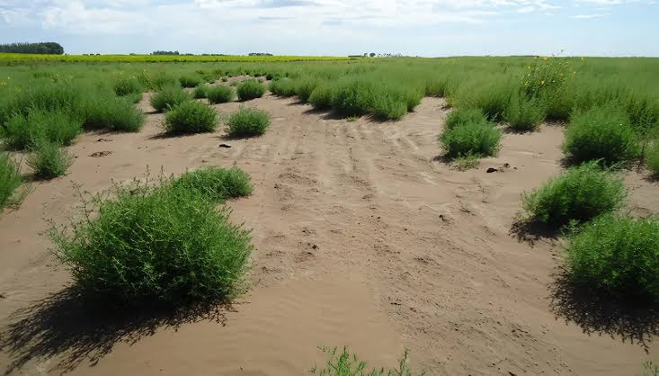
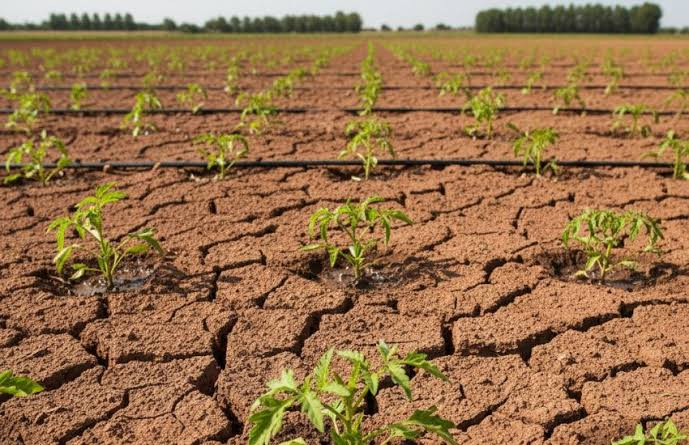
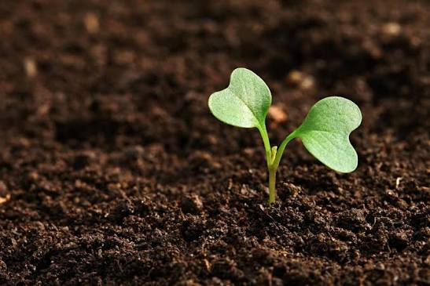
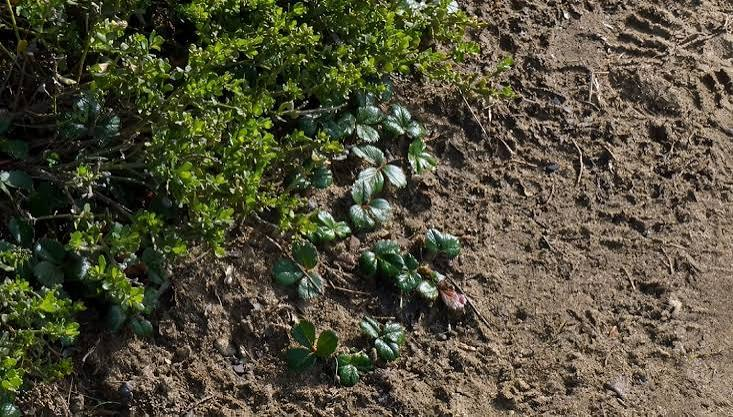
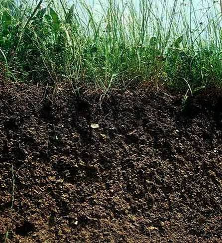
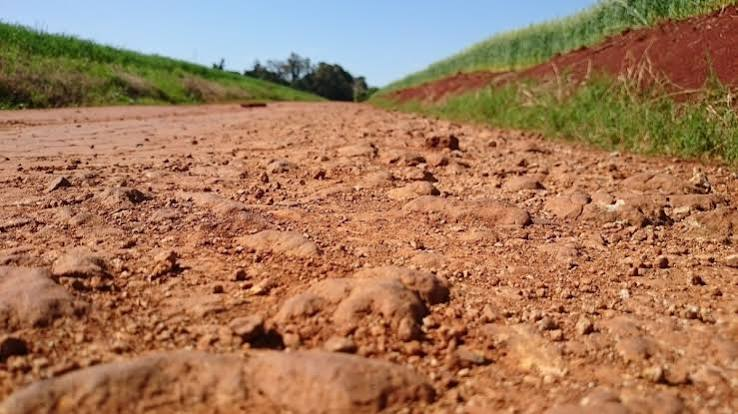

|
|
INICIO | PLANTAS | TIPOS | CUIDADOS |
|---|
|
 Suelo arenosoEs un suelo suelto que permite que el agua drene rapidamente. Es adecuado para plantas que no necesitan demasiada humedad. |
 Suelo arcillosoEs un suelo compacto que retiene bastante agua y nutrientes. Puede ser fertil, aunque necesita buen drenaje para evitar el exceso de humedad. |
|
 Suelo limosoEs un suelo suave y de textura fina que retiene humedad y nutrientes. Es favorable para el crecimiento de diferentes tipos de plantas. |
 Suelo francoEs una combinacion equilibrada de arena, limo y arcilla. Tiene buen drenaje y buena capacidad para conservar nutrientes, por lo que es muy utilizado en huertos. |
|
 Suelo humiferoContiene una gran cantidad de materia organica, como hojas y restos vegetales descompuestos. Es rico en nutrientes y ayuda a que las plantas crezcan adecuadamente. |
 Suelo calizoEs un suelo que contiene una cantidad considerable de calcio. Suele ser de color claro y puede ser adecuado para plantas que toleran suelos con mayor presencia de cal. |